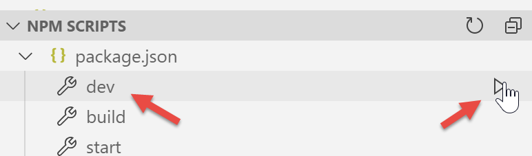
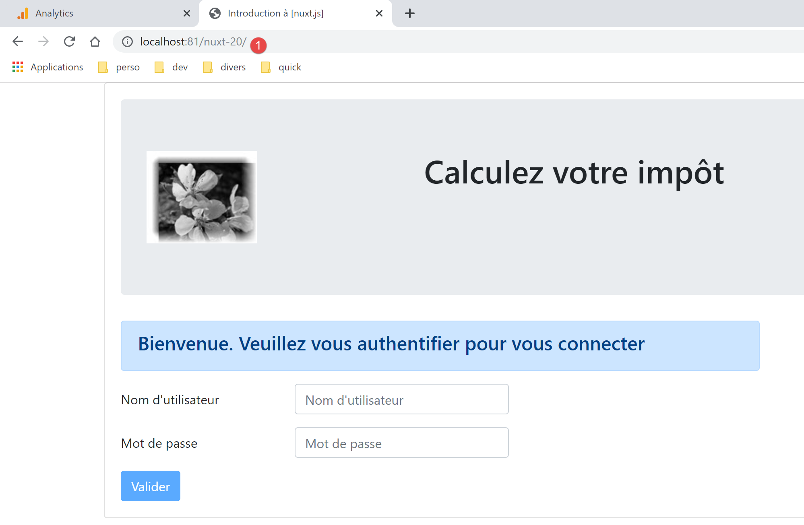
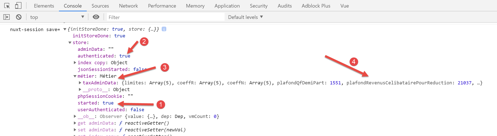
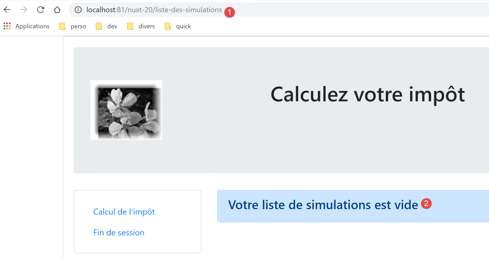
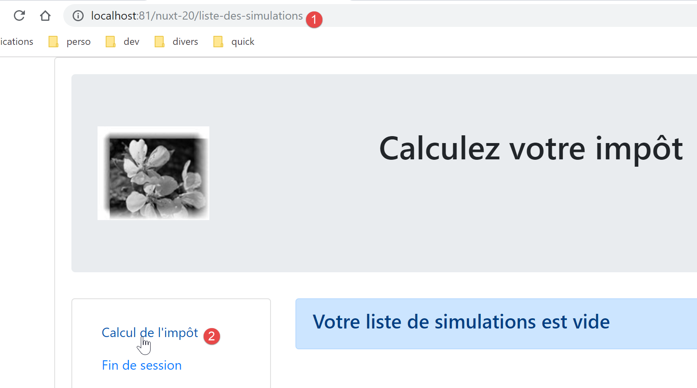
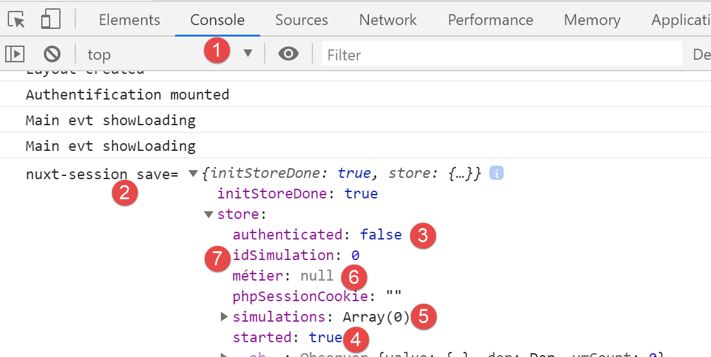

17. Example [nuxt-20]: Porting the [vuejs-22] example
17.1. Introduction
Here, we propose to port the [vuejs-22] example, which was a [vue.js] SPA-type application, into a [nuxt] SSR context. [vuejs-22] was a client application for the tax calculation server that presented the following views:
The first view is the authentication view:

The second view is the tax calculation view:

The third view displays the list of simulations performed by the user:

The screen above shows that simulation #1 can be deleted. This results in the following view:

If we now delete the last simulation, we get the following new view:

We will gradually migrate the [vuejs-22] application to the [nuxt-20] application. We will not re-explain the code from [vuejs-22]. Readers are encouraged to review the document |Introduction to the VUE.JS Framework Through Examples|. The various steps should highlight the differences between a [vuejs] application and a [nuxt] application.
17.2. Step 1
The [nuxt-20] project is initially created by cloning the [nuxt-12] project. This is indeed a good starting point:
- it can communicate with the tax calculation server;
- it correctly handles the errors the server sends;
- the [Nuxt] client and server can communicate via a [Nuxt] session;
We therefore have a solid starting infrastructure. Our main task should be to modify:
- the pages. We’ll use those from the [vuejs-22] project, which will need to be adapted to the new environment;
- store management. Additional information should appear (list of simulations), and other information may become unnecessary;
- client and server [nuxt] routing management;
So first, we create the [nuxt-20] project by cloning the [nuxt-12] project:

Then we remove the pages and components that are no longer needed [2]:
- the [components/navigation] component disappears;
- the layout [layout/default] disappears;
- the pages [index, authentication, get-admindata, end-session] are removed;
Then we integrate elements from [vuejs-22] into [nuxt-20] [3]:
- the three pages [Authentication, TaxCalculation, SimulationList] from the [vuejs-22] application go into the [pages] folder;
- the components [FormCalculImpot, Menu, Layout] from the [vuejs-22] application go into the [components] folder;
- the [Main] page from [vuejs-22], which served as the [layout] for the [vuejs-22] application, goes into the [layouts] folder;
We rename the integrated elements [4]:

- in [layouts], [Main] has become [default] since that is the default name for a [nuxt] application’s layout;
- in [pages], the [Authentication] page has become [index], since [Authentication] served this role in the [vuejs-22] application;
At this point, we can compile the project to see the first errors. We modify the [nuxt.config] file from the [nuxt-12] example to now run [nuxt-20]:
export default {
mode: 'universal',
/*
** Page headers
*/
head: {
title: 'Introduction to [nuxt.js]',
meta: [
{ charset: 'utf-8' },
{ name: 'viewport', content: 'width=device-width, initial-scale=1' },
{
hid: 'description',
name: 'description',
content: 'ssr routing loading asyncdata middleware plugins store'
}
],
link: [{ rel: 'icon', type: 'image/x-icon', href: '/favicon.ico' }]
},
/*
** Customize the progress bar color
*/
loading: false,
/*
** Global CSS
*/
css: [],
/*
** Plugins to load before mounting the App
*/
plugins: [
{ src: '@/plugins/client/plgSession', mode: 'client' },
{ src: '@/plugins/server/plgSession', mode: 'server' },
{ src: '@/plugins/client/plgDao', mode: 'client' },
{ src: '@/plugins/server/plgDao', mode: 'server' },
{ src: '@/plugins/client/plgEventBus', mode: 'client' }
],
/*
** Nuxt.js dev-modules
*/
buildModules: [
// Doc: https://github.com/nuxt-community/eslint-module
'@nuxtjs/eslint-module'
],
/*
** Nuxt.js modules
*/
modules: [
// Doc: https://bootstrap-vue.js.org
'bootstrap-vue/nuxt',
// Doc: https://axios.nuxtjs.org/usage
'@nuxtjs/axios',
// https://www.npmjs.com/package/cookie-universal-nuxt
'cookie-universal-nuxt'
],
/*
** Axios module configuration
** See https://axios.nuxtjs.org/options
*/
axios: {},
/*
** Build configuration
*/
build: {
/*
** You can extend the Webpack configuration here
*/
extend(config, ctx) {}
},
// source code directory
srcDir: 'nuxt-20',
// router
router: {
// application URL root
base: '/nuxt-20/',
// routing middleware
middleware: ['routing']
},
// server
server: {
// server port, 3000 by default
port: 81,
// network addresses listened to, default is localhost: 127.0.0.1
// 0.0.0.0 = all network addresses on the machine
host: 'localhost'
},
// environment
env: {
// axios configuration
timeout: 2000,
withCredentials: true,
baseURL: 'http://localhost/php7/scripts-web/impots/version-14',
// session cookie configuration [nuxt]
maxAge: 60 * 5
}
}
Next, we [build] the project:

The following errors are reported:
- The error on line 1 indicates that a non-existent image is being referenced. We will retrieve it in [vuejs-22];
- The error on line 2 shows that the [./FormCalculImpot] component does not exist. Indeed, this component is now in [@/components/form-calcul-impot];
- The errors on lines [3-5] show that the component [./Layout] does not exist. In fact, this component is now located in [@/components/layout];
- the errors on lines [6-7] indicate that the component [./Menu] does not exist. Indeed, it is now named [@/components/menu];
We add the image [assets/logo.jpg] to the [nuxt-20] project:

Additionally, we will correct the component paths on all pages. Let’s take the [calcul-impot] page as an example:
<!-- HTML definition of the view -->
<template>
<div>
<Layout :left="true" :right="true">
<!-- tax calculation form on the right -->
<FormCalculImpot slot="right" @resultatObtenu="handleResultatObtenu" />
<!-- navigation menu on the left -->
<Menu slot="left" :options="options" />
</Layout>
<!-- area displaying tax calculation results below the form -->
<b-row v-if="resultObtained" class="mt-3">
<!-- empty three-column area -->
<b-col sm="3" />
<!-- nine-column area -->
<b-col sm="9">
<b-alert show variant="success">
<span v-html="result"></span>
</b-alert>
</b-col>
</b-row>
</div>
</template>
<script>
// imports
import FormCalculImpot from './FormCalculImpot'
import Menu from './Menu'
import Layout from './Layout'
export default {
// components used
components: {
Layout,
FormCalculImpot,
Menu
},
The three [import] statements on lines 26–28 become:
// imports
import FormCalculImpot from '@/components/form-calcul-impot'
import Menu from '@/components/menu'
import Layout from '@/components/layout'
Check and, if necessary, correct the [import] statements for all components, layouts, and pages. Once these corrections are made, you can try a new [build]. Normally, there should be no more errors.
You can then try running the application:

Errors appear:
We can see that the [dev] command combined with the [eslint] module is more strict, syntactically speaking, than the [build] command. Here, it requires that the comparison operator [!=] be written as [!==], which is a stricter operator (it also checks the type of the operands). These errors occur in the [index.vue] page.
We correct the above errors and rerun the project. We then get a warning from the [eslint] module:

We fix this error using the [Quick fix] from the [eslint] module [2].
We restart the project. There are no more compilation errors. We then request the URL [http://localhost:81/nuxt-20/] in a browser. We get a runtime error:

The error is in [index.vue] [2]. The error [1] stems from the fact that in [vuejs-22], the [dao] layer was available in [this.$dao], whereas in [nuxt-12], whose infrastructure we have adopted, it is available in the function [this.$dao()].
The error is in the [created] function of the [index] page lifecycle:

For now, we’ll simply rename [created] to [created2] so that the [created] lifecycle function isn’t executed [3].
We save the change and reload the [index] page in the browser. This time it works:

17.3. Step 2
The pages of the [vuejs-22] project used the following injected elements:
- $dao: for the [dao] layer of the [vue.js] client;
- $session: for a session stored in the browser’s [localStorage];
These elements no longer exist in the [nuxt-12] project infrastructure that we copied:
- there are now two [dao] layers, one for the [nuxt] client and the other for the [nuxt] server. Both are available via an injected function called [$dao]. This means that in the application’s pages, [this.$dao] must be replaced with [this.$dao()];
- the [nuxt] session managed by the [nuxt-20] application no longer has anything to do with the [$session] object from the [vuejs-22] application, where there was no concept of session cookies. Nevertheless, they serve a similar purpose: storing persistent information as the user interacts with the application. The [nuxt] session stores information in the store rather than directly in the session. In the application’s pages, [this.$session] must be replaced with [this.$store] when storing information in the session, and with [this.$session()] when manipulating the session itself;
- to check the state of a property P in the store, you must write [this.$store.state.P];
- To change the property P of the store, you must write [this.$store.commit('replace', {P:value}]
We make these changes in the [index] page:
<!-- HTML definition of the view -->
<template>
<Layout :left="false" :right="true">
<template slot="right">
<!-- HTML form - we submit its values with the [authenticate-user] action -->
<b-form @submit.prevent="login">
<!-- title -->
<b-alert show variant="primary">
<h4>Welcome. Please authenticate to log in</h4>
</b-alert>
<!-- 1st line -->
<b-form-group label="Username" label-for="user" label-cols="3">
<!-- user input field -->
<b-col cols="6">
<b-form-input id="user" v-model="user" type="text" placeholder="Username" />
</b-col>
</b-form-group>
<!-- 2nd line -->
<b-form-group label="Password" label-for="password" label-cols="3">
<!-- password input field -->
<b-col cols="6">
<b-input id="password" v-model="password" type="password" placeholder="Password" />
</b-col>
</b-form-group>
<!-- 3rd line -->
<b-alert v-if="showError" show variant="danger" class="mt-3">The following error occurred: {{ message }}</b-alert>
<!-- [submit] button on a 3rd line -->
<b-row>
<b-col cols="2">
<b-button :disabled="!valid" variant="primary" type="submit">Submit</b-button>
</b-col>
</b-row>
</b-form>
</template>
</Layout>
</template>
<!-- view dynamics -->
<script>
/* eslint-disable no-console */
import Layout from '@/components/layout'
export default {
// components used
components: {
Layout
},
// component state
data() {
return {
// user
user: '',
// their password
password: '',
// controls whether an error message is displayed
showError: false,
// the error message
message: ''
}
},
// computed properties
computed: {
// valid inputs
valid() {
return this.user && this.password && this.$store.state.started
}
},
// lifecycle: the component has just been created
mounted() {
// eslint-disable-next-line
console.log("Authentication mounted");
// Can the user run simulations?
if (this.$store.state.started && this.$store.state.authenticated && this.$business.taxAdminData) {
// then the user can run simulations
this.$router.push({ name: 'taxCalculation' })
// return to the event loop
return
}
// if the JSON session has already been started, we don't restart it
if (!this.$store.state.started) {
// start waiting
this.$emit('loading', true)
// Initialize the session with the server - asynchronous request
// we use the promise returned by the [dao] layer methods
this.$dao()
// Initialize a JSON session
.initSession()
// we received the response
.then((response) => {
// end of wait
this.$emit('loading', false)
// analyze the response
if (response.status !== 700) {
// display the error
this.message = response.response
this.showError = true
// return to the event loop
return
}
// the session has started
this.$store.commit('replace', { started: true })
console.log('[authentication], session=', this.$session())
})
// in case of an error
.catch((error) => {
// we propagate the error to the [Main] view
this.$emit('error', error)
})
// in all cases
.finally(() => {
// save the session
this.$session().save()
})
}
},
// event handlers
methods: {
// ----------- authentication
async login() {
try {
// start waiting
this.$emit('loading', true)
// not yet authenticated
this.$store.commit('replace', { authenticated: false })
// blocking authentication with the server
const response = await this.$dao().authenticateUser(this.user, this.password)
// End of loading
this.$emit('loading', false)
// analyze the server response
if (response.status !== 200) {
// display the error
this.message = response.response
this.showError = true
// return to the event loop
return
}
// no error
this.showError = false
// we are authenticated
this.$store.commit('replace', { authenticated: true })
// --------- now requesting data from the tax authority
// initially, no data
this.$business.setTaxAdminData(null)
// start waiting
this.$emit('loading', true)
// Blocking request to the server
const response2 = await this.$dao().getAdminData()
// end of loading
this.$emit('loading', false)
// analyze the response
if (response2.status !== 1000) {
// display the error
this.message = response2.response
this.showError = true
// return to the event loop
return
}
// no error
this.showError = false
// store the received data in the [business] layer
this.$business.setTaxAdminData(response2.response)
// we can proceed to the tax calculation
this.$router.push({ name: 'calculImpot' })
} catch (error) {
// we propagate the error to the main component
this.$emit('error', error)
} finally {
// update store
this.$store.commit('replace', { job: this.$job })
// save the session
this.$session().save()
}
}
}
}
</script>
Note the following points:
- line 69: the [created2] function has been renamed to [mounted] so that the [nuxt] server does not execute it (it does not execute either [beforeMount] or [mounted]). Only the [nuxt] client will execute it, as was the case with the [vuejs-22] example;
- line 73: we reference [this.$business], which does not currently exist;
- line 75: we have never used this method in a [nuxt] application. We’ll need to see if it works in a [nuxt] context;
- lines 112, 172: in [vuejs-22], the project session was saved this way. With the [nuxt-20] project, the [save] method must receive the current context. We know that in a [nuxt] page, the [context] object is available in [this.$nuxt.context];
Lines 112 and 172 are therefore rewritten as follows:
this.$session().save(this.$nuxt.context)
Note that this code is not optimized. Rather than using the [this.$session()] function multiple times, it would be better to write:
and then use the [session] variable. The same reasoning applies to the [this.$dao()] function.
With these corrections made, we can reload the URL [http://localhost:81/nuxt-20/] in a browser. We still get the same page as before:

Let’s look at the browser logs:

Log [1] is the last log generated by the [nuxt] client. In [2], we see that the [started] property is set to [true], which means that the [mounted] function successfully started a JSON session with the tax calculation server. We also see that the store has properties that will need to be either discarded or renamed. Remember that we are using the store from the [nuxt-12] example.
Now let’s request the URL [http://localhost:81/nuxt-20/] again while the tax calculation server is not running. First, we make sure to delete the [nuxt] session cookie:

The screenshot above is a Chrome screenshot. Once this is done, the URL [http://localhost:81/nuxt-20/] returns the following result:

The error was handled correctly by the [vuejs-22] project. It continues to be handled correctly by the [nuxt-20] project.
17.4. Step 3
Now that we have the authentication page, we need to look at the code that runs when the user clicks the [Validate] button:
// event handlers
methods: {
// ----------- authentication
async login() {
try {
// start waiting
this.$emit('loading', true)
// not yet authenticated
this.$store.commit('replace', { authenticated: false })
// blocking authentication with the server
const response = await this.$dao().authenticateUser(this.user, this.password)
// loading complete
this.$emit('loading', false)
// Analyze the server response
if (response.status !== 200) {
// display the error
this.message = response.response
this.showError = true
// return to the event loop
return
}
// no error
this.showError = false
// we are authenticated
this.$store.commit('replace', { authenticated: true })
// --------- now requesting data from the tax authority
// initially, no data
this.$business.setTaxAdminData(null)
// start waiting
this.$emit('loading', true)
// Blocking request to the server
const response2 = await this.$dao().getAdminData()
// end of loading
this.$emit('loading', false)
// analyze the response
if (response2.status !== 1000) {
// display the error
this.message = response2.response
this.showError = true
// return to the event loop
return
}
// no error
this.showError = false
// store the received data in the [business] layer
this.$business.setTaxAdminData(response2.response)
// we can proceed to the tax calculation
this.$router.push({ name: 'calculImpot' })
} catch (error) {
// we propagate the error to the main component
this.$emit('error', error)
} finally {
// update store
this.$store.commit('replace', { job: this.$job })
// save the session
this.$session().save(this.$nuxt.context)
}
}
}
The main issue here seems to be the absence of the [this.$métier] data. To fix this, we will:
- include the [Métier] class from the [vuejs-22] example. We will place it in the [api] folder;
- inject a [$métier] function into the [nuxt] client context, which will provide access to this class;
First, copy the [Métier] class into the [api] folder:

Once the [Métier] class is in the project, we’ll create a new plugin for the [nuxt] client. This plugin, called [pluginMétier], will inject a [$métier] function that provides access to the [Métier] class:
/* eslint-disable no-console */
// create an access point to the [business] layer
import Business from '@/api/client/Business'
export default (context, inject) => {
// instantiate the [business] layer
const business = new Business()
// inject a [$business] function into the context
inject('business', () => business)
// log
console.log('[client function $business created]')
}
Now that this is done, we can update the [index] page:
// lifecycle: the component has just been created
mounted() {
// eslint-disable-next-line
console.log("Authentication mounted");
// Can the user run simulations?
if (this.$store.state.started && this.$store.state.authenticated && this.$business().taxAdminData) {
// then the user can run simulations
this.$router.push({ name: 'tax-calculation' })
// return to the event loop
return
}
// if the JSON session has already been started, we don't restart it
...
},
// event handlers
methods: {
// ----------- authentication
async login() {
try {
// start waiting
this.$emit('loading', true)
// not yet authenticated
this.$store.commit('replace', { authenticated: false })
// Blocking authentication with the server
const response = await this.$dao().authenticateUser(this.user, this.password)
// end of loading
this.$emit('loading', false)
// analyze the server response
if (response.status !== 200) {
// display the error
this.message = response.response
this.showError = true
// return to the event loop
return
}
// no error
this.showError = false
// we are authenticated
this.$store.commit('replace', { authenticated: true })
// --------- now requesting data from the tax authority
// initially, no data
this.$business().setTaxAdminData(null)
// start waiting
this.$emit('loading', true)
// Blocking request to the server
const response2 = await this.$dao().getAdminData()
// end of loading
this.$emit('loading', false)
// analyze the response
if (response2.status !== 1000) {
// display the error
this.message = response2.response
this.showError = true
// return to the event loop
return
}
// no error
this.showError = false
// store the received data in the [business] layer
this.$business().setTaxAdminData(response2.response)
// we can proceed to the tax calculation
this.$router.push({ name: 'tax-calculation' })
} catch (error) {
// We propagate the error to the main component
this.$emit('error', error)
} finally {
// update store
this.$store.commit('replace', { job: this.$job() })
// save the session
this.$session().save(this.$nuxt.context)
}
}
}
- lines 43, 61, 69: [this.$métier] has been replaced by [this.$métier()];
- lines 8, 63: the name of the page [CalculImpot] in the [vuejs-22] project has become the page [calcul-impot] in the [nuxt-20] project;
With these corrections made, we can try to validate the authentication page:

The resulting page is as follows:

We have successfully reached the tax calculation page. Now let’s look at the logs:

In [2], we see that the authentication status has been correctly stored. In [3-4], we see that the [taxAdminData] data has been retrieved, which allows the tax to be calculated by the [Métier] class.
17.5. Step 4
Let’s examine the [calcul-impot] page we obtained:
<!-- HTML definition of the view -->
<template>
<div>
<Layout :left="true" :right="true">
<!-- tax calculation form on the right -->
<FormCalculImpot slot="right" @resultatObtenu="handleResultatObtenu" />
<!-- navigation menu on the left -->
<Menu slot="left" :options="options" />
</Layout>
<!-- area displaying tax calculation results below the form -->
<b-row v-if="resultObtained" class="mt-3">
<!-- empty three-column area -->
<b-col sm="3" />
<!-- nine-column area -->
<b-col sm="9">
<b-alert show variant="success">
<span v-html="result"></span>
</b-alert>
</b-col>
</b-row>
</div>
</template>
<script>
// imports
import FormCalculImpot from '@/components/form-calcul-impot'
import Menu from '@/components/menu'
import Layout from '@/components/layout'
export default {
// components used
components: {
Layout,
TaxCalculationForm,
Menu
},
// internal state
data() {
return {
// menu options
options: [
{
text: 'List of simulations',
path: '/list-of-simulations'
},
{
text: 'End of session',
path: '/end-session'
}
],
// tax calculation result
result: '',
resultObtained: false
}
},
// lifecycle
created() {
// eslint-disable-next-line
console.log("CalculImpot created");
},
// event handling methods
methods: {
// tax calculation result
handleResult(result) {
// construct the result as an HTML string
const tax = "Tax amount: " + result.tax + ' euro(s)'
const discount = 'Discount: ' + result.discount + ' euro(s)'
const discount = 'Discount: ' + result.discount + ' euro(s)'
const surcharge = 'Surcharge: ' + result.surcharge + ' euro(s)'
const rate = "Tax rate: " + result.rate
this.result = tax + '<br/>' + discount + '<br/>' + reduction + '<br/>' + surcharge + '<br/>' + rate
// display the result
this.resultObtained = true
// ---- store update [Old]
// a simulation of +
this.$store.commit('addSimulation', result)
// save the session
this.$session.save()
}
}
}
</script>
- lines 44 and 48: the navigation menu links are correct. The page [/fin-session] does not exist. The [vuejs-22] project solved this problem with routing. We will do the same with the [nuxt-20] project;
- line 76: we are referencing a method [addSimulation] that does not currently exist. We will create it;
- line 78: as in the [index] page, we need to write [this.$session().save(this.$nuxt.context)];
Let’s modify the store [store/index]. Inherited from the [nuxt-12] project, it currently looks like this:
/* eslint-disable no-console */
// store state
export const state = () => ({
// JSON session started
jsonSessionStarted: false,
// user authenticated
userAuthenticated: false,
// PHP session cookie
phpSessionCookie: '',
// adminData
adminData: ''
})
// store mutations
export const mutations = {
// replace state
replace(state, newState) {
for (const attr in newState) {
state[attr] = newState[attr]
}
},
// reset the store
reset() {
this.commit('replace', { jsonSessionStarted: false, userAuthenticated: false, phpSessionCookie: '', adminData: '' })
}
}
// store actions
export const actions = {
nuxtServerInit(store, context) {
// Who executes this code?
console.log('nuxtServerInit, client=', process.client, 'server=', process.server, 'env=', context.env)
// initialize session
initStore(store, context)
}
}
function initStore(store, context) {
// store is the store to be initialized
// retrieve the session
const session = context.app.$session()
// Has the session already been initialized?
if (!session.value.initStoreDone) {
// start a new store
console.log("nuxtServerInit, initializing a new store")
// add the store to the session
session.value.store = store.state
// The store is now initialized
session.value.initStoreDone = true
} else {
console.log("nuxtServerInit, resuming an existing store")
// update the store with the session store
store.commit('replace', session.value.store)
}
// save the session
session.save(context)
// log
console.log('initStore completed, store=', store.state)
}
- lines 3–27: we will resume the state and mutations of the [vuejs-22] application (see document [3]):
// store state
export const state = () => ({
// JSON session started
started: false,
// user authenticated
authenticated: false,
// PHP session cookie
phpSessionCookie: '',
// list of simulations
simulations: [],
// the number of the last simulation
simulationId: 0,
// [business] layer
profession: null
})
// store mutations
export const mutations = {
// state replacement
replace(state, newState) {
for (const attr in newState) {
state[attr] = newState[attr]
}
},
// reset the store
reset() {
this.commit('replace', { started: false, authenticated: false, phpSessionCookie: '', idSimulation: 0, simulations: [], business: null })
},
// delete row at index
deleteSimulation(state, index) {
// eslint-disable-next-line no-console
console.log('deleteSimulation operation')
// delete line [index]
state.simulations.splice(index, 1)
console.log('simulation state', state.simulations)
},
// Add a simulation
addSimulation(state, simulation) {
// eslint-disable-next-line no-console
console.log('addSimulation mutation')
// simulation ID
state.simulationId++
simulation.id = state.simulationId
// Add the simulation to the simulations array
state.simulations.push(simulation)
}
}
- lines 4 and 6: we introduce the properties already used;
- line 8: we store the PHP session cookie. This is essential so that the client and the [nuxt] server share the same PHP session with the tax calculation server;
- line 10: the list of simulations performed by the user;
- line 12: the number of the last simulation performed by the user;
- line 14: the [business] layer;
- lines 30–47: the mutations present in the [vuejs-22] project’s store and referenced by the application’s pages. The [vuejs-22] project had a mutation called [clear] that cleared the list of simulations. We are not including it because the [reset] mutation already present should suffice;
- lines 26–28: the [reset] mutation is modified to account for the new state content;
The [calcul-impot] page uses the following [form-calcul-impot] component:
<!-- HTML definition of the view -->
<template>
<!-- HTML form -->
<b-form @submit.prevent="calculerImpot" class="mb-3">
<!-- 12-column message on a blue background -->
<b-row>
<b-col sm="12">
<b-alert show variant="primary">
<h4>Fill out the form below and submit it</h4>
</b-alert>
</b-col>
</b-row>
<!-- form elements -->
<!-- first row -->
<b-form-group label="Are you married or in a civil partnership?">
<!-- radio buttons in 5 columns-->
<b-col sm="5">
<b-form-radio v-model="married" value="yes">Yes</b-form-radio>
<b-form-radio v-model="married" value="no">No</b-form-radio>
</b-col>
</b-form-group>
<!-- second line -->
<b-form-group label="Number of dependent children" label-for="children">
<b-form-input id="children" v-model="children" :state="childrenValid" type="text" placeholder="Enter the number of children"></b-form-input>
<!-- possible error message -->
<b-form-invalid-feedback :state="childrenValid">You must enter a positive number or zero</b-form-invalid-feedback>
</b-form-group>
<!-- third line -->
<b-form-group label="Annual taxable net income" label-for="salaire" description="Round down to the nearest euro">
<b-form-input id="salary" v-model="salary" :state="validSalary" type="text" placeholder="Annual salary"></b-form-input>
<!-- possible error message -->
<b-form-invalid-feedback :state="salaireValide">You must enter a positive number or zero</b-form-invalid-feedback>
</b-form-group>
<!-- fourth line, [submit] button -->
<b-col sm="3">
<b-button :disabled="formInvalid" type="submit" variant="primary">Submit</b-button>
</b-col>
</b-form>
</template>
<!-- script -->
<script>
export default {
// internal state
data() {
return {
// married or not
married: 'no',
// number of children
children: '',
// annual salary
salary: ''
}
},
// calculated internal state
computed: {
// form validation
formInvalid() {
return (
// invalid salary
!this.salary.match(/^\s*\d+\s*$/) ||
// or invalid children
!this.children.match(/^\s*\d+\s*$/) ||
// or tax data not obtained
!this.$occupation.taxAdminData
)
},
// salary validation
validSalary() {
// must be a number >= 0
return Boolean(this.salary.match(/^\s*\d+\s*$/) || this.salary.match(/^\s*$/))
},
// validate children
validChildren() {
// must be a number >= 0
return Boolean(this.children.match(/^\s*\d+\s*$/) || this.children.match(/^\s*$/))
}
},
// lifecycle
created() {
// log
// eslint-disable-next-line
console.log("FormCalculImpot created");
},
// event handler
methods: {
calculateTax() {
// calculate the tax using the [business] layer
const result = this.$business.calculateTax(this.married, Number(this.children), Number(this.salary))
// eslint-disable-next-line
console.log("result=", result);
// update the result
result.married = this.married
result.children = this.children
result.salary = this.salary
// emit the [resultObtained] event
this.$emit('resultObtained', result)
}
}
}
</script>
- lines 65, 89: the reference [this.$métier] must be changed to [this.$métier()];
Once these corrections have been made, we can try running a simulation:

We get the following response:

If we look at the logs:

- in [9-10], we see that the first simulation is indeed in the [store];
- in [5], the number of the last simulation has indeed been incremented; ## 17.6. **Step 5**
Now that we’ve run a simulation, let’s click the [List of Simulations] link. We get the following page:

The routing for the [nuxt] client was successful. Let’s look at the code for the [simulation-list] page:
<!-- HTML definition of the view -->
<template>
<div>
<!-- layout -->
<Layout :left="true" :right="true">
<!-- simulations in the right column -->
<template slot="right">
<template v-if="simulations.length == 0">
<!-- no simulations -->
<b-alert show variant="primary">
<h4>Your list of simulations is empty</h4>
</b-alert>
</template>
<template v-if="simulations.length != 0">
<!-- there are simulations -->
<b-alert show variant="primary">
<h4>List of your simulations</h4>
</b-alert>
<!-- table of simulations -->
<b-table :items="simulations" :fields="fields" striped hover responsive>
<template v-slot:cell(action)="data">
<b-button @click="deleteSimulation(data.index)" variant="link">Delete</b-button>
</template>
</b-table>
</template>
</template>
<!-- navigation menu in left column -->
<Menu slot="left" :options="options" />
</Layout>
</div>
</template>
<script>
// imports
import Layout from '@/components/layout'
import Menu from '@/components/menu'
export default {
// components
components: {
Layout,
Menu
},
// internal state
data() {
return {
// navigation menu options
options: [
{
text: "Tax Calculation",
path: '/tax-calculation'
},
{
text: 'End of session',
path: '/logout'
}
],
// HTML table parameters
fields: [
{ label: '#', key: 'id' },
{ label: 'Married', key: 'married' },
{ label: "Number of children", key: 'children' },
{ label: 'Salary', key: 'salary' },
{ label: 'Tax', key: 'tax' },
{ label: 'Discount', key: 'discount' },
{ label: 'Discount', key: 'discount' },
{ label: 'Surcharge', key: 'surcharge' },
{ label: '', key: 'action' }
]
}
},
// calculated internal state
computed: {
// list of simulations retrieved from the Vuex store
simulations() {
return this.$store.state.simulations
}
},
// lifecycle
created() {
// eslint-disable-next-line
console.log("ListeSimulations created");
},
// methods
methods: {
deleteSimulation(index) {
// eslint-disable-next-line
console.log("deleteSimulation", index);
// Delete simulation #[index]
this.$store.commit('deleteSimulation', index)
// saving the session
this.$session.save()
}
}
}
</script>
- lines 47–56: the navigation menu targets are correct;
- line 75: the store is correctly referenced;
- line 89: we are using a mutation [deleteSimulation] that we added in the previous step;
- line 91: this line must be rewritten as [this.$session().save(this.$nuxt.context)];
We make the necessary changes, then we try to delete the displayed simulation:

We then get the following page:

Let’s look at the logs:

- In [6], we see that the simulation table is empty;
Now let’s go back to the tax calculation form:

We get the following page:

So the routing worked.
17.7. Step 6
We still need to handle the [End Session] navigation option in the navigation menu:
// Menu options
options: [
{
text: 'List of simulations',
path: '/list-of-simulations'
},
{
text: 'End of session',
path: '/end-session'
}
]
- line 9, the page [/end-session] does not exist. The [vuejs-22] project handled this case with routing rules in a [router.js] file:
// imports
import Vue from 'vue'
import VueRouter from 'vue-router'
// views
import Authentication from './views/Authentication'
import TaxCalculation from './views/TaxCalculation'
import SimulationList from './views/SimulationList'
import NotFound from './views/NotFound'
// the session
import session from './session'
// routing plugin
Vue.use(VueRouter)
// application routes
const routes = [
// authentication
{ path: '/', name: 'authentication', component: Authentication },
{ path: '/authentication', name: 'authentication2', component: Authentication },
// tax calculation
{
path: '/tax-calculation', name: 'taxCalculation', component: TaxCalculation,
meta: { authenticated: true }
},
// list of simulations
{
path: '/list-of-simulations', name: 'listSimulations', component: ListSimulations,
meta: { authenticated: true }
},
// end of session
{
path: '/end-session', name: 'endSession'
},
// unknown page
{
path: '*', name: 'notFound', component: NotFound,
},
]
// the router
const router = new VueRouter({
// the routes
routes,
// URL display mode
mode: 'history',
// the application's base URL
base: '/client-vuejs-tax/'
})
// route validation
router.beforeEach((to, from, next) => {
// eslint-disable-next-line no-console
console.log("router to=", to, "from=", from);
// route reserved for authenticated users?
if (to.meta.authenticated && !session.authenticated) {
next({
// proceed to authentication
name: 'authentication',
})
// return to the event loop
return;
}
// special case for end of session
if (to.name === "endSession") {
// clear the session
session.clear();
// go to the [authentication] view
next({
name: 'authentication',
})
// return to the event loop
return;
}
// other cases - next normal view in the routing
next();
})
// export the router
export default router
- Lines 64–76 handled the special case of the route to the path [/end-session];
- line 66: clear the current session;
- lines 68–70: display the [authentication] view;
We’ll try to do something similar in the [nuxt] client routing file:

The [client/routing.js] script becomes the following:
/* eslint-disable no-console */
export default function(context) {
// Who is executing this code?
console.log('[client middleware], process.server', process.server, ', process.client=', process.client)
// managing the PHP session cookie in the browser
// the browser's PHP session cookie must match the one found in the Nuxt session
// The [end-session] action receives a new PHP cookie (both server and Nuxt client)
// If the server receives it, the client must forward it to the browser
// for its own communication with the PHP server
// this is client-side routing
// we retrieve the PHP session cookie
const phpSessionCookie = context.store.state.phpSessionCookie
if (phpSessionCookie) {
// if it exists, we assign the PHP session cookie to the browser
document.cookie = phpSessionCookie
}
// where are we going?
const to = context.route.path
if (to === '/end-session') {
// clear the session
const session = context.app.$session()
session.reset(context)
// redirect to the index page
context.redirect({ name: 'index' })
}
}
- We added lines [19-27] to the existing code;
- line 20: retrieve the [path] of the current route's target;
- line 21: we check if it is [/end-session]. If so:
- lines 23-24: the session is reset;
- line 26: we redirect the [nuxt] client to the home page;
The session’s [session.reset(context)] method (line 24) is as follows:
// reset the session
reset(context) {
console.log('nuxt-session reset')
// reset the store
context.store.commit('reset')
// Save the new store to the session and save the session
this.save(context)
}
The [context.store.commit('reset')] method (line 5) is as follows:
// reset the store
reset() {
this.commit('replace', { started: false, authenticated: false, phpSessionCookie: '', idSimulation: 0, simulations: [], business: null })
}
When we now click the [End Session] link, the home page is displayed with the following logs:

- in [3], we see that we are no longer authenticated;
- in [4], we see that the JSON session has started;
- in [6], the [business] layer is no longer present in the store (it is still present in the pages via [this.$business()]);
- in [5, 7], there are no more simulations;
It is important to understand what happens at the end of a session:
- the [nuxt] session is reset: the [started] property of the store changes to [false];
- there is a redirect to the [index] page;
- the [mounted] method of the [index] page is executed. This starts a new JSON session with the tax calculation server. If the operation succeeds, the [started] property of the store becomes [true]; ## 17.8. **Step 7**
At this point, the [nuxt-20] application has all the features of the [vuejs-22] application. The port seems complete.
We’ll take it a step further in the [nuxt] spirit. The [mounted] method of the [index] page poses a problem. It launches an asynchronous operation that a search engine won’t wait for to finish. We know that in this case, we must place the asynchronous operation inside an [asyncData] function because then, the [nuxt] server executing it will wait for it to finish before delivering the page to the search engine.
Here, we use the [asyncData] function written in the [nuxt-12] application for the [index] page:
export default {
name: 'InitSession',
// components used
components: {
Layout,
Navigation
},
// asynchronous data
async asyncData(context) {
// log
console.log('[index asyncData started]')
// we don't do things twice if the page has already been requested
if (process.server && context.store.state.jsonSessionStarted) {
console.log('[index asyncData canceled]')
return { result: '[success]' }
}
try {
// Start a JSON session
const dao = context.app.$dao()
const response = await dao.initSession()
// log
console.log('[index asyncData response=]', response)
// retrieve the PHP session cookie for future requests
const phpSessionCookie = dao.getPhpSessionCookie()
// store the PHP session cookie in the [nuxt] session
context.store.commit('replace', { phpSessionCookie })
// Was there an error?
if (response.status !== 700) {
// the error is in response.response
throw new Error(response.response)
}
// Note that the JSON session has started
context.store.commit('replace', { jsonSessionStarted: true })
// return the result
return { result: '[success]' }
} catch (e) {
// log
console.log('[index asyncData error=]', e)
// note that the JSON session has not started
context.store.commit('replace', { jsonSessionStarted: false })
// report the error
return { result: '[failure]', showErrorLoading: true, errorLoadingMessage: e.message }
} finally {
// save the store
const session = context.app.$session()
session.save(context)
// log
console.log('[index asyncData finished]')
}
},
// lifecycle
beforeCreate() {
console.log('[index beforeCreate]')
},
created() {
console.log('[index created]')
},
beforeMount() {
console.log('[index beforeMount]')
},
mounted() {
console.log('[index mounted]')
// client only
if (this.showErrorLoading) {
console.log('[index mounted, showErrorLoading=true]')
this.$eventBus().$emit('errorLoading', true, this.errorLoadingMessage)
}
}
- lines 13, 33, 40: change the property [jsonSessionStarted] to [started];
- line 13: in the [nuxt-12] application, only the [nuxt] server executed the [index] page and its [asyncData] function. The [nuxt] client only executed the [index] page after receiving it from the [nuxt] server, and therefore did not execute the [asyncData] function. In [nuxt-20], it’s different: the [End Session] link will display the [index] page in the [nuxt] client environment. The [asyncData] function will then be executed. However, when arriving at the [index] page this way, the [nuxt] session has been reset in the meantime, and the [started] property of the store is [false], so the condition on line 13 will necessarily be false. We can therefore omit [process.server], and the [nuxt] client will not perform this check;
- lines 15, 35, 42: a [result] property is added to the [data] properties of the [index] page. In [nuxt-20], this property will not be used, so we will remove it from the result returned by the function;
- Lines 61–67: This [mounted] method must be retained because it is what allows the [nuxt] client to display the error message. However, the way the error is handled will be modified;
In the current [index] page, we integrate the [asyncData] function above in place of the old [mounted] function and add a new [mounted] function. The code for the [index] page in the [nuxt-20] example then becomes the following:
...
<!-- view dynamics -->
<script>
/* eslint-disable no-console */
import Layout from '@/components/layout'
export default {
// components used
components: {
Layout
},
// component state
data() {
return {
// user
user: '',
// their password
password: '',
// display error
showError: false
}
},
// computed properties
computed: {
// valid inputs
valid() {
return this.user && this.password && this.$store.state.started
}
},
// asynchronous data
async asyncData(context) {
// log
console.log('[index asyncData started]')
// we don't do things twice if the page has already been requested
if (process.server && context.store.state.started) {
console.log('[index asyncData canceled]')
return
}
try {
// Start a JSON session
const dao = context.app.$dao()
const response = await dao.initSession()
// log
console.log('[index asyncData response=]', response)
// retrieve the PHP session cookie for future requests
const phpSessionCookie = dao.getPhpSessionCookie()
// store the PHP session cookie in the [nuxt] session
context.store.commit('replace', { phpSessionCookie })
// Was there an error?
if (response.status !== 700) {
// The error is in response.response
throw new Error(response.response)
}
// Note that the JSON session has started
context.store.commit('replace', { started: true })
// no result
return
} catch (e) {
// log
console.log('[index asyncData error=]', e.message)
// note that the JSON session has not started
context.store.commit('replace', { started: false })
// report the error
return { showErrorLoading: true, errorLoadingMessage: e.message }
} finally {
// save the store
const session = context.app.$session()
session.save(context)
// log
console.log('[index asyncData finished]')
}
},
// lifecycle
beforeCreate() {
console.log('[index beforeCreate]')
},
created() {
console.log('[index created]')
},
beforeMount() {
// client only
console.log('[index beforeMount]')
// Handle potential errors
if (this.showErrorLoading) {
// log
console.log('[index beforeMount, showErrorLoading=true]')
// propagate the error to the main component [default]
this.$emit('error', new Error(this.errorLoadingMessage))
}
},
mounted() {
console.log('[index mounted]')
},
// event handlers
methods: {
// ----------- authentication
async login() {
...
}
</script>
- lines 58, 65: the [asyncData] function no longer renders the [result] property unused here;
- line 81: the [beforeMount] method of the [nuxt] client. It was chosen over the [mounted] method to handle any potential errors from [asyncData];
- line 85: we check if the [errorLoading] property has been set. It can only be set by the [asyncData] function;
- lines 85–90: if the [asyncData] function has reported an error, we pass it to the [default] page via the [error] event. This is how the old [created] function, which we just replaced, handled potential errors;
Let’s run some tests.
First, we delete both the [nuxt] session cookie and the PHP session cookie, if they exist. We then request the [http://localhost:81/nuxt-20/] page while the tax calculation server is not running. We get the following page:

We reload the same page after starting the tax calculation server:

Let’s look at the logs:

- In [2-3], we see that the JSON session has been started;
- in [4], we see the PHP session cookie that the [nuxt] server retrieved during its exchange with the tax calculation server. The [nuxt] client will now use it;
Now let’s log in:

We get the following page:

In [1], we received an error message. This means that the browser did not send the correct session cookie from the PHP session started by the [nuxt] server in the previous step. In [nuxt-12], the PHP session cookie was passed from the [nuxt] server to the [nuxt] client in the [nuxt] client routing of the [middleware/client/routing] script:
/* eslint-disable no-console */
export default function(context) { // who executes this code?
console.log('[middleware client], process.server', process.server, ', process.client=', process.client)
// handling the PHP session cookie in the browser
// the browser's PHP session cookie must match the one found in the Nuxt session
// the [end-session] action receives a new PHP cookie (both server and Nuxt client)
// if the server receives it, the client must pass it to the browser
// for its own communication with the PHP server
// we are here in client-side routing
// We retrieve the PHP session cookie
const phpSessionCookie = context.store.state.phpSessionCookie
if (phpSessionCookie) {
// if it exists, we assign the PHP session cookie to the browser
document.cookie = phpSessionCookie
}
// where are we going?
const to = context.route.path
if (to === '/end-session') {
// clear the session
const session = context.app.$session()
session.reset(context)
// redirect to the index page
context.redirect({ name: 'index' })
}
}
Lines 13–17 allow the [nuxt] client to retrieve the PHP session cookie from the [nuxt] server.
The problem here is that when you click the [Validate] button, there is no routing from the [nuxt] client. Its routing function is therefore not called. We fix the problem by duplicating lines 12–17 at the beginning of the authentication method on the [index] page:
// event handlers
methods: {
// ----------- authentication
async login() {
// retrieve the PHP session cookie from the store
const phpSessionCookie = this.$store.state.phpSessionCookie
if (phpSessionCookie) {
// if it exists, set the PHP session cookie in the browser
document.cookie = phpSessionCookie
}
try {
// start waiting
this.$emit('loading', true)
// we are not yet authenticated
Lines 5–10: We retrieve the PHP session cookie initiated by the [nuxt] server from the store. Once this change is made, the tax calculation page loads successfully, indicating that authentication worked.
17.9. Step 8
We have a functional application that works in the [nuxt] spirit. As we did for the [nuxt-13] application, we will focus on the [nuxt] server navigation. As previously mentioned, the user is not supposed to manually type the application’s URLs. They are supposed to use the links presented to them, which are executed by the [nuxt] client, which then operates in SPA mode. Nevertheless, we will ensure that navigation on the [nuxt] server always keeps the application in a stable state.
From the study conducted for [nuxt-13] (see linked paragraph), we know that we need to:
- modify the [middleware/routing] script;
- Add a script [middleware/server/routing];

The [middleware/routing] script is modified as follows:
/* eslint-disable no-console */
// import the server and client middleware
import serverRouting from './server/routing'
import clientRouting from './client/routing'
export default function(context) {
// Who is executing this code?
console.log('[middleware], process.server', process.server, ', process.client=', process.client)
if (process.server) {
// server routing
serverRouting(context)
} else {
// client routing
clientRouting(context)
}
}
- line 4: we import the routing script from the [nuxt] server;
- lines 10–12: if the [nuxt] server is executing the code, we use its routing function;
The [middleware/server/routing] script is as follows:
/* eslint-disable no-console */
export default function(context) {
// Who is executing this code?
console.log('[middleware server], process.server', process.server, ', process.client=', process.client)
// we retrieve some information here and there
const store = context.store
// where are we coming from?
const from = store.state.from || 'nowhere'
// where are we going?
let to = context.route.name
// special case of /end-session, which has no [name] attribute
if (context.route.path === '/end-session') {
to = 'end-session'
}
// possible redirection
let redirection = ''
// routing complete
let done = false
// Are we already in a [nuxt] server redirect?
if (store.state.serverRedirection) {
// nothing to do
done = true
}
// Is this a page reload?
if (!done && from === to) {
// nothing to do
done = true
}
// Server-side navigation control [nuxt]
// We mirror the client-side navigation menu
// First handle the end-of-session case
if (!done && store.state.started && store.state.authenticated && to === 'end-session') {
// clear the session
const session = context.app.$session()
session.reset(context)
// redirect to the index page
redirection = 'index'
// done
done = true
}
// if the PHP session has not started
if (!done && !store.state.started && to !== 'index') {
// redirect to [index]
redirect = 'index'
// task completed
done = true
}
// case where the user is not authenticated
if (!done && store.state.started && !store.state.authenticated && to !== 'index') {
redirect = 'index'
// task completed
done = true
}
// case where [adminData] was not obtained
if (!done && store.state.started && store.state.authenticated && !store.state.business.taxAdminData && to !== 'index') {
// redirect to [index]
redirect = 'index'
// task completed
done = true
}
// if [adminData] was obtained
if (
!done &&
store.state.started &&
store.state.authenticated &&
store.state.business.taxAdminData &&
to !== 'tax-calculation' &&
to !== 'list-of-simulations'
) {
// stay on the same page
redirection = from
// task completed
done = true
}
// We've normally performed all the checks ---------------------
// redirection?
if (redirect) {
// Log the redirect to the store
store.commit('replace', { serverRedirection: true })
} else {
// no redirect
store.commit('replace', { serverRedirection: false, from: to })
}
// save the store to the [nuxt] session
const session = context.app.$session()
session.value.store = store.state
session.save(context)
// handle any server-side redirection [nuxt]
if (redirect) {
context.redirect({ name: redirection })
}
}
- In this script, we reuse the concepts already developed and used in the [nuxt] server routing of the [nuxt-13] application;
- We add two properties to the application store:
- [from]: the name of the last page displayed. We know that the [nuxt] client has this information, but the [nuxt] server does not. We will add this information by storing the name of the page to be displayed in the store each time the [nuxt] server routes. We will do the same for each routing on the [nuxt] client. Thus, on the next routing by the [nuxt] server, it will find in the store the name of the last page displayed by the application;
- [serverRedirection]: When a routing destination is rejected by the [nuxt] server, it will perform a redirection. It will then indicate in the store that the [nuxt] server’s next destination is a redirection page. This redirection will trigger a new execution of the [nuxt] server’s router. If the router detects that the current destination is the result of a redirection, it will allow it to proceed;
- lines 6–11: we retrieve the information needed for routing;
- lines 13–16: the target [/end-session] is not associated with a page named [end-session]. It therefore has no name. We give it one;
- line 19: the target of a possible redirect;
- line 21: [done=true] when the routing tests are complete;
- lines 23–27: as mentioned, if the current routing results from a redirect, there is nothing to do. Indeed, during the previous routing, the router decided that the client browser should be redirected. There is no need to reconsider this decision;
- lines 29–33: if it is a page reload, we let it happen. This is not a universal rule for all [Nuxt] applications: you must examine the effects of a reload for each page. Here, it turns out that reloading the pages [index, tax-calculation, simulation-list] does not cause any undesirable effects;
- lines 35–85: the [nuxt] server routing mirrors the [nuxt] client routing. When on a page, the [nuxt] server routing must reflect the navigation menu provided by the [nuxt] client while on that page;
- lines 38–47: We first handle the case where the target [end-session] does not correspond to an existing page. If the conditions are met (session started, user authenticated), we clear the session and redirect the user to the [index] page;
- lines 49–55: if the JSON session with the tax calculation server has not started, then the only possible destination is the [index] page;
- lines 57–62: if the JSON session has been started and the user is not authenticated and has not requested the authentication page, then we redirect to the authentication page, which is the [index] page;
- lines 64–70: if the user is authenticated but the [adminData] has not been obtained, then the user is redirected to the authentication page. Authentication does two things: it authenticates the user, and if authentication is successful, it also requests the [adminData] data. If this data has not been obtained, then authentication must be restarted;
- lines 72–85: if the [adminData] data has been obtained, then the only possible targets are [tax-calculation] and [simulation-list]. If this is not the case, routing is denied;
- lines 88–95: the store is updated depending on whether there will be a redirection or not;
- line 94: there is no redirection. Therefore, the current [to] becomes the [from] for the next routing;
- lines 96–99: the store’s information is saved in the [nuxt] session cookie;
- lines 100–103: if a redirect is required, it is performed;
To run the tests, make sure to start from a clean slate by deleting the [nuxt] session cookie and the PHP session cookie with the tax calculation server:
To test the [nuxt] server’s routing, try all possible URLs [/, /tax-calculation, /simulation-list] on each page. Each time, the application must remain in a consistent state.
17.10. Step 9
Step 9 involves deploying the [nuxt-20] application. This requires hosting that provides a [node.js] environment to run the [nuxt] server. I do not have this. The reader can follow the procedures described in the linked section to deploy the [nuxt-20] application on their development machine and secure it with an HTTPS protocol.
17.11. Conclusion
The porting of the [vuejs-22] application to the [nuxt-20] application is now complete. Let’s review a few key points from this port:
- the [vuejs-22] pages have been retained;
- the asynchronous operations that existed in the [vuejs-22] pages have been migrated to an [asyncData] function;
- in [nuxt-20], we had to manage two entities: the [nuxt] client and the [nuxt] server. The latter entity did not exist in [vuejs-22]. To maintain consistency between the two entities, we needed a [nuxt] session;
- we had to manage the [nuxt] server routing;
In practice, it is likely preferable to start directly with a [nuxt] architecture rather than building a [vue.js] architecture and then porting it to a [nuxt] environment.